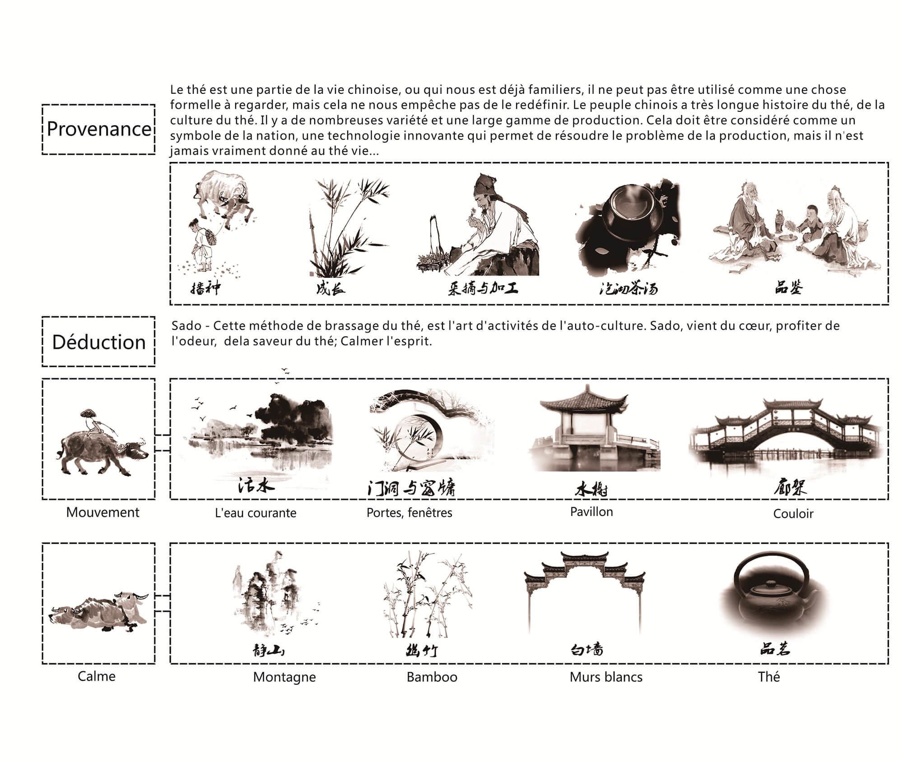

Conception de salon du thé
Les images suivantes peuvent cliquer pour agrandir
{kind=link}
{kind=link}
{kind=link}
Fond de la conception- Le thé est une partie de la vie chinoise, ou qui nous est déjà familier, il ne peut pas être utilisé comme une chose formelle à regarder, mais cela ne nous empêche pas de le redéfinir. Le peuple chinois a une très longue histoire du thé,de la culture du thé. Il y a de nombreuses variétés et une large gamme de production. Cela doit être considéré comme un symbole de la nation , une technologie innovante permet de résoudre le problème de la production, mais il n’est jamais vraiment donné au thé vie ......
Description de la conception
Programme global visant à "revenir à l’origine de la culture chinoise". Citer ,la culture du thé, comme le porteur, en utilisant "le salon de thé" en tant que mode de reproduction de la scène de l'espace matérial, montrant différentes scènes de la vie étroitement liées au thé et d'éveiller la conscience des gens à la culture et au retour à la tradition.
La disposition sera la meme que la disposition traditionnelle chinoise: un centre (le patio), un axe (couloir en escalade), deux blocs (le salon de thé et le salon privé).La disposition que l'on appelle "起, 承, 转, 合" est un jardin classique pratique, subtile et calme, ce qui reflète la culture du thé, tout en élargissant les effets spatiaux;
La forme du bâtiment, en utilisant les toitures traditionnelles “Juan Peng Xie Shanding”. “Xie Shanding” est une structure sérieuse et solennelle, alors que “Juan Peng” contient une touche de tendresse;

Plans de la conception
{kind=link}
{kind=link}
{kind=link}
{kind=link}
Revenir à l'origine - La vraie vie du thé est le porteur d'un million d'années de survivants spirituels et de civilisations. Le retour à l'origine, avec la méthode de fabrication de la saveur originale et de reproduction de l'espace est une bonne chose après tout. La vie moderne a déjà atténué la culture traditionnelle de la conscience et de l'identité, la culture traditionnelle ne se popularise pas par elle-même, mais a besoin de porteur pour dire, "revenez au point de départ et localisez la culture perdue» - et nous sommes le soutien pour la construction de cet espace.
Les rendus
{kind=link}
Porte d'entrée:Comme le point de départ, mais aussi comme la limite entre l'espace «intérieur» et «extérieur». Les deux fenêtres de tuiles font en sorte que "intérieur" et "extérieur" communiquent. Et dehors, la forme de la plante Podocarpus indique l'axe d'entrée principale et accentue la solennité.
Prélude:Utilisez les couloirs en escalades comme un «prélude», séquence avec des murs blancs dont le milieu a été bloqué pour empêcher de regarder a l'interieur. Afin d'éviter un «prélude» trop monotone, on utilise l'encadrée de paysages et l'opposition paysages.
Statique et Dynamique:Les murs blancs séparent complètement les espaces, mais légèrement monotone. Fenêtres et bambous contrastent le monotone, de sorte que les espaces communiquent mais n'interfèrent pas les uns avec les autres .
Plus avec moins:La surface du Salon de thé est toute petite, l'espace est limité, l'utilisation d'un mode "droit" de disposition, trop direct et fastidieux. Des couloirs, des murs blancs serrés, des cadres de fenêtres et des portes ... enrichieront le sentiment d'espace et de mystère de l'entière disposition.
Lieu des merveilles:
2Les couloirs et les fenêtres permettent le deplacement des personnes et de leur regard pour éviter des paysages trop monotones et ajouter de la variété et des sites pittoresques a leur vision.